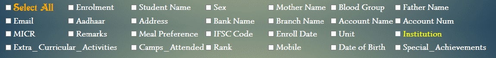
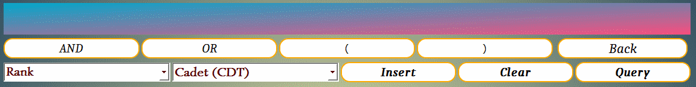

This Help section contains Documentation , Features and Usage details of this software.
The Software starts with this login screen :

There are two Usernames that a user can enter :
- ncc_editor
- ncc_viewer
- For "ncc_editor" username, user must enter the password to start the program. The user "ncc_editor" has all the permissions of the software which allows him to use all the features that it can provide. The user is allowed to modify the data of Candidates in the main database of the software.
- "ncc_viewer" username has no password and anyone can access the software with this username. The user "ncc_viewer" has the permissions only to view the Candidate details and generate the excel sheets when needed but has no permission to edit the Candidate details in the Software's Database and has no permission to Backup or Restore the database.
After the LOGIN button is pressed , the software starts either in view mode or editing mode corresponding to the Username
There are totally 7 tabs in the software, each of which has its own purpose.
The Tabs are :
- Enrolment form
- Query
- Forms
- Data Entry
- Long Nominal Role
- Settings
- Help
Detailed Description of all the TABS has been provided below :
Enrolment Form

The Enrolment Tab is used to Enrol new candidates into the Database. It's used to fill all the details of each candidate.
As seen in the above image, the Enrolment form Tab consists of several options. Each of the data that is entered in the fields will be saved in the database once submitted.
Elements of Enrolment form :
- Select signature
- Select Picture
- Search field
- ENROLL Button
- Various fields and corresponding Entry Boxes
- Update Entry checkbox
- Submit button
Select signature :
This is a button which when clicked opens a file browser dialog where in the user can select the picture of the candidate's signature, while enroling.
The file dialog menu looks like this.

Select Picture :
This is a button which when clicked opens a file browser dialog where in the user can select the picture of the candidate, while enroling.
The file dialog menu looks like this.

Search field :

This field is used to search and get all the details of a candidate from his/her enrolment number or aadhaar number which can be chosen by the given radio buttons below the search field.
If there is No result from the search , then the message "No Details found" is shown at the top center of the window.
When the search is successful, the search results are displayed in the respective entry fields. However, the Enrolment form switches to VIEW MODE where the user can't accidentally change the data but can only view it.
ENROLL Button :
Whenever the user searches from the search field and if the search becomes successful , then the form goes into View Mode and doesn't allow any modification of the data displayed in the fields. During the View Mode, the ENROLL button would be in released state (not pressed)

Image of ENROLL button in released state
To put the Enrolment form back in EDIT MODE, click on the ENROLL button after which the ENROLL button goes into Pressed state and the form would switch to the Edit Mode

Image of ENROLL button in pressed state
Various fields and corresponding Entry Boxes :
The Enrolment form has various fields like Enrolment Number , Name , Date of Birth, Unit,Meal Preference etc
The Fields with the red star * are compulsory fields and must be filled before submitting the form.
Different fields have different types of input boxes namely
- Line Entry : User can enter a line of text
- Multi-Line Entry : User can any number of lines
- Date Entry : User can specify any date. Mouse scroll will also work for changing the date when mouse pointer is over the date entry.
- Single selection Entry : User can only select one item from several items
- Radio buttons : User can only select only one Button.
- Multi-selection box : User can select many items from a list of items.
- Check box : User can either Check or Uncheck which is analogous to True or False


Entry Constraints:
- Enrolment Number, Aadhaar Number, Candidate Name, Address and Unit fields are compulsory
- Aadhaar Number field can only take Numbers and needs to be 12 digits
- Mobile Number field can only take Numbers and needs to be 10 digits
- Account Number field can only take Numbers
- IFSC code should be 11 characters
- MICR code can only take Numbers and should be 9 digits
- Enrolment Number should be unique and shouldn't have another duplicate.If the present details need to be updated, check the "Update Entry" checkbox before clicking submit button.
- Aadhaar Number should be unique and shouln't contain any duplicate i.e
Update Entry :
This check Box is used to update the details of a candidate who is already enrolled. To update the details of the candidate, Check the "Update Entry" before clicking the Submit button.
Submit Button :

Submit Button is clicked when all the required fields are filled. After successful submission the Candidate details will be added to the database and the Candidate photo and signature is added into the Candidate Photos folder including the generated PDF. If the user submits an already present Enrolment Number, error message is shown to check the Update Entry checkbox.
QUERY
Query Tab is used to search and get the details of candidates who have already been enrolled before. The searching can be done in various ways and the results can be filtered as per your choice.
Elements of QUERY tab :
- Checkboxes of all fields
- Field Selection box
- Condition linkers (Or , And )
- Back
- Insert
- Clear
- Query
- Query Result
- Save Results
Checkboxes of All fields :

These checkboxes are used to specify which fields must be shown when the Query is successful. In the Query result only these fields which are checked are shown omitting the rest of the fields. If "Select All" is checked , then all fields are shown in the Query result.
Field Selection Box :
This Selection box is used to search based on a condition of your choice. After selecting the field from the box and Entering the condition data , User clicks on the Insert Button and the condition gets inserted and is shown in the provided blue-pink box.
Condition Linkers :

These Buttons are used to link multiple conditions together logically.
Example :- If the user wants to get details of all "Male" candidates of "Cadets" rank, it can be done as shown below:

Insert , Back , Query , Clear :
- Insert : is used to insert any condition specified from the Selected field into the label which shows all applied conditions
- Back : is used to remove the last applied condition, which is used in case if multiple conditions are applied and the last one needs to be removed.
- Clear : is used to clear all the conditions or constraints applied previously and clears all conditions.
- Query : is used to search and get the details of all the candidates based on the conditions that you have set.
Query Results :
These Buttons are used to link multiple conditions together logically.
Example :- If the user wants to get details of all "Male" candidates of "Cadets" rank, it can be done as shown below: